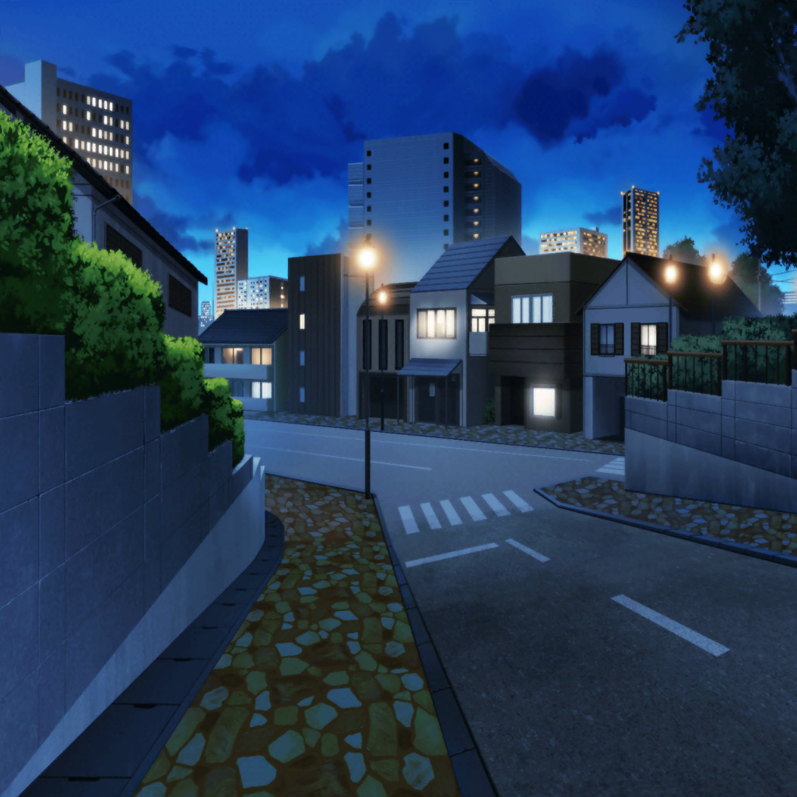

七夕祭りの帰り道
日菜
えへへ、ちょっとだけのつもりが
結局ほとんどの屋台に寄っちゃったねー
紗夜
ええ、食べものだけじゃなくて、ヨーヨーに射的……
本当にずいぶん遊んだわね。
日菜の体力には恐れ入るわ
日菜
だってだって、すっごくおもしろかったんだもん！
お小遣いがあればもっと遊びたかったなー
紗夜
そうね。
たしかに楽しめたわ
日菜
おねーちゃん、それ、ホント？
あたしと遊んで、ホントに楽しかった？
紗夜
え、ええ……まあ……
そんなこと聞き返すなんて、一体どうしたの？
日菜
えっと、その……
紗夜
一体どうしたの？
はっきり言ってくれないとわからないわよ
日菜
う、うん……あのね、あたしね……
今日、おねーちゃんと一緒に七夕祭り行けたのが、
すっごく嬉しかったの
日菜
だから、またこうやって一緒におねーちゃんと
過ごせたら嬉しいなって……
紗夜
日菜……
日菜
あたしは、今よりももっとおねーちゃんと話したいし、
一緒に出かけたい。
おねーちゃんはあたしといるの……イヤ？
紗夜
別に嫌なわけじゃない、けど……
日菜
けど……？ けど、何……？
紗夜
……わかったわ。
たまに、ならいいわよ
日菜
わあっ……本当！？
紗夜
ただし、バンドやギターの練習が最優先。
それはあなたもわかるわね？
日菜
うんっ……！ うん！ それでいいよ！
えっへへー、嬉しいなあ♪
日菜
めげずにおねーちゃんの事誘おっと♪
しつこいって言われたっていいもんね！
紗夜
……まったく。しょうがない子ね
日菜
さっそくだけど、来週の日曜日は？
一緒にお出かけしようよ！
紗夜
えっ……！？ ら、来週は……
日菜
ダメ？ 忙しい？
紗夜
（特に予定はないけれど……急に言われても、
自分の気持ちの整理が……）
紗夜
その……来週の日曜日はRoseliaの練習があるから
日菜
えー、そうなの？
残念だなあ……
紗夜
（はあ……妹に嘘をつくなんて……
私、何をやってるのかしら）
紗夜
（……でも……自分の気持ちをしっかり整理しないと、
うまく話せないし……）
日菜
おねーちゃん、やっぱり忙しいよね。
……あっ！ それじゃあさ！
来年！ 来年は？
紗夜
来年……？
日菜
来年の七夕祭り、一緒に行こうよ！
今年は偶然一緒に行くことができたって感じだったけど……
来年はちゃんと一緒に行きたい！
紗夜
来年って……
紗夜
そんな先のこと、わからないわよ
日菜
そんなこと言わずにさ！ ね！
予定、あけといてよ。おねーちゃん、お願いっ！
紗夜
まあ……考えておくわ
紗夜
（１年後……私達の関係がどうなっているのか……
私の願い事が、叶っているのか……）
紗夜
（どうするかは私次第、なのよね）
日菜
やったあー！ ありがとうっ！
おねーちゃん、大好き！
紗夜
……もう、わかったわよ
日菜
えへへっ。
来年の七夕祭りが今から楽しみだなーっ♪
日菜
（あたし達、ちょっとずつちょっとずつ、小さい頃みたいに
仲良くなれてる気がする）
日菜
（これから先、もっともっと仲良くなれるように……
今までより一緒に過ごせるように……）
日菜
（そんな風になれるといいな……♪）